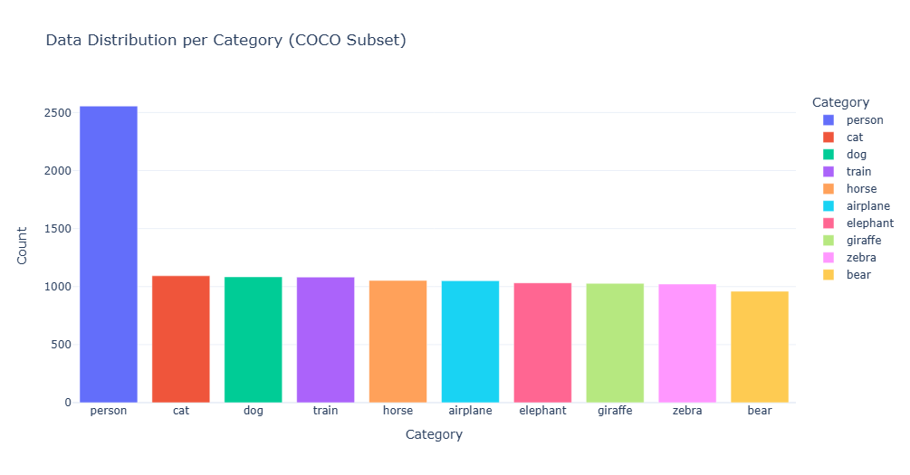
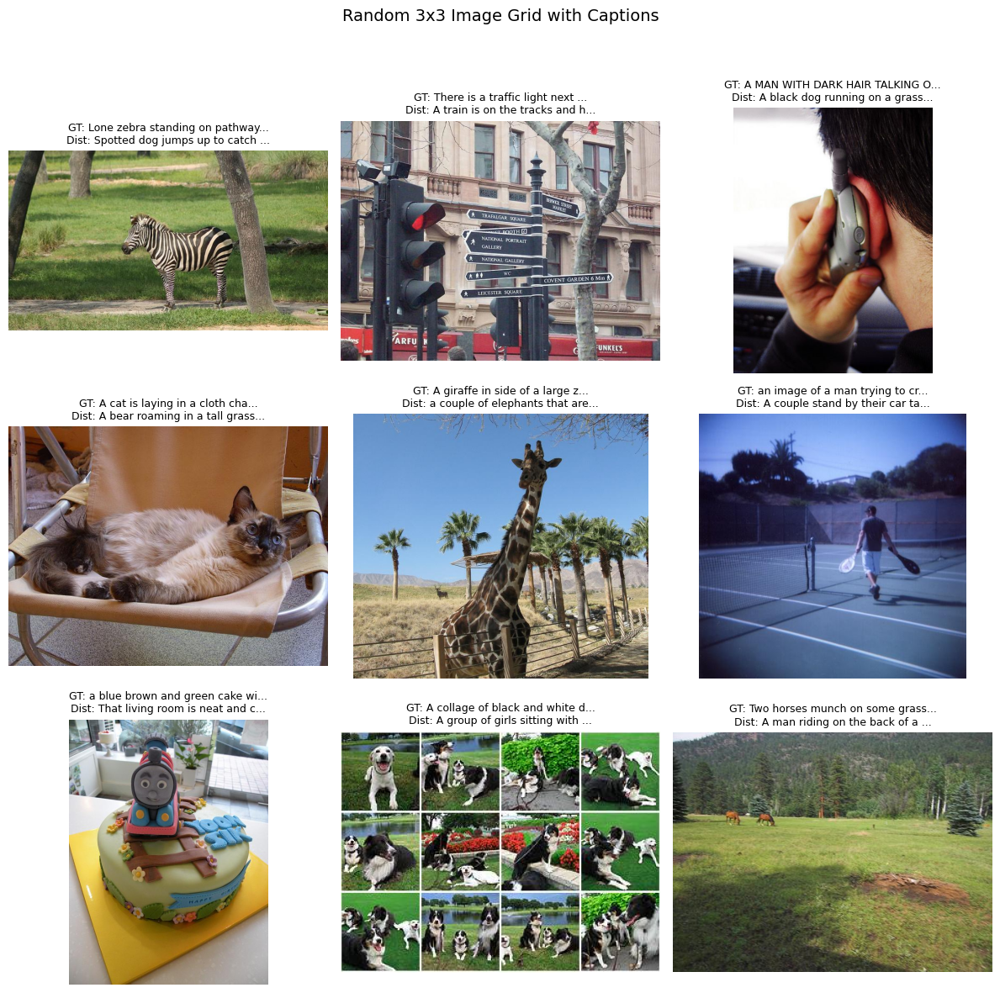
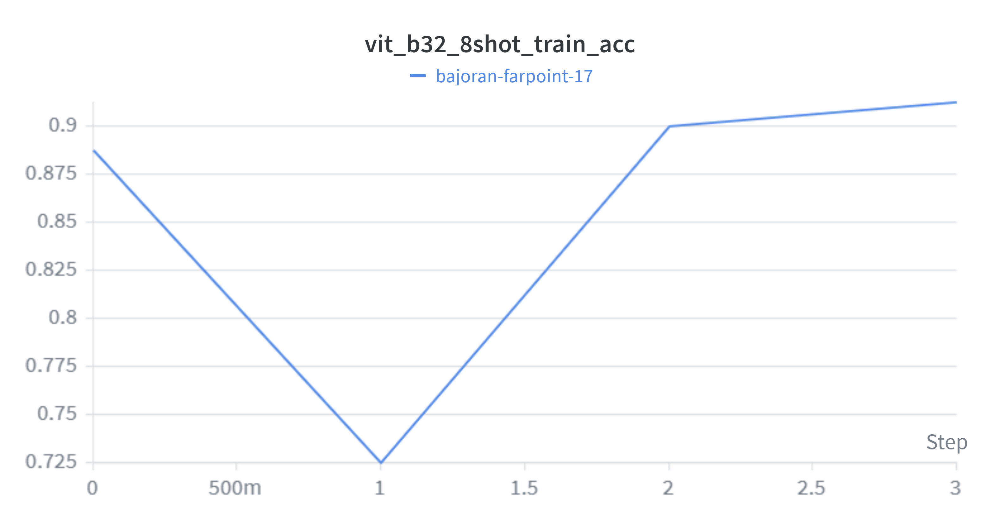
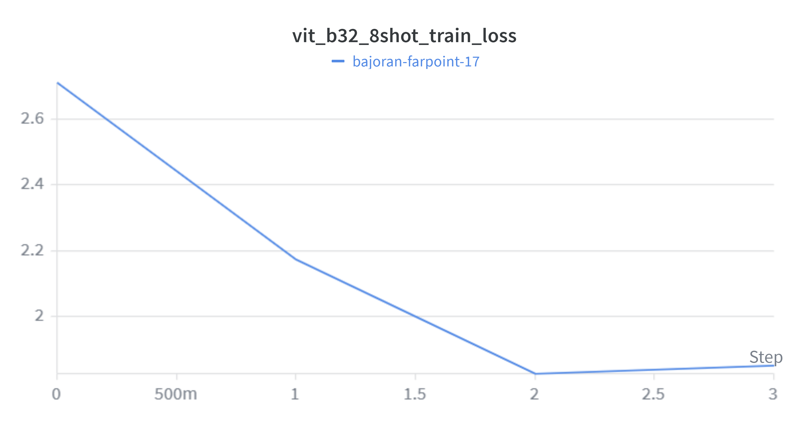
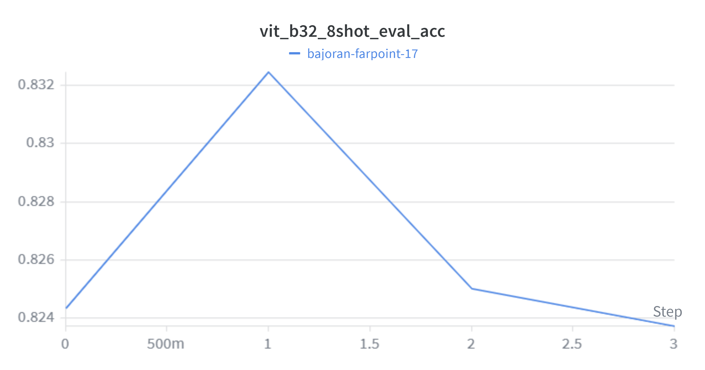
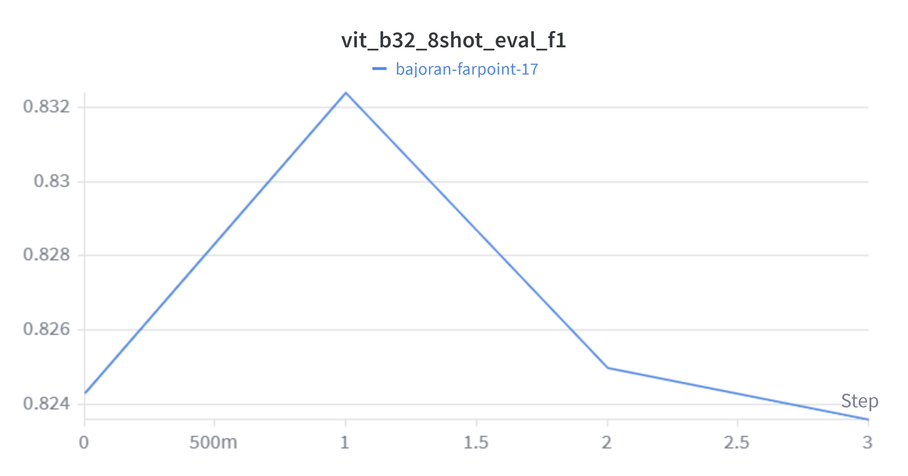
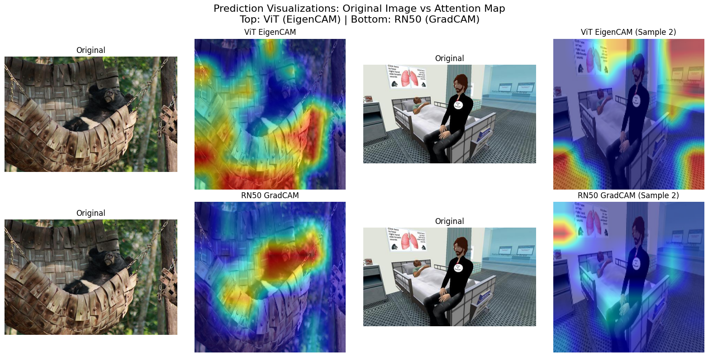

COCO Multimodal Caption Classification
Exploring Zero-shot and Few-shot Learning with CLIP and PyTorch
Introduction
This project evaluates Zero-shot and Few-shot Learning using CLIP models on the COCO dataset. Instead of standard categorization, the task requires the model to correctly identify the true caption among distracted candidates.
- Input: An image and N=10 candidate captions (1 ground-truth, 11 random distractors).
- Output: The index of the predicted matching caption.
- Dataset: A curated subset containing 10 categories (bear, zebra, elephant, etc.), with ~30K total samples carefully filtered from standard COCO multimodal subsets.
Exploratory Data Analysis (EDA)
Our dataset exhibits natural distributions simulating real-world scenarios. We visualized image samples with their paired texts below.


Data Configuration & Workflow
- Splitting:
k={0, 8, 16, 32}shots removed exclusively for the linear probing, preserving strict test set separation. - Normalization: Configured precisely per standard CLIP requirements (mean
[0.481, 0.457, 0.408]vs[0.268, 0.261, 0.275]).
Model Architecture
Using ViT-B/32 and ResNet50 vision encoders. We attach a custom 1D Linear head and fine-tune using Cross-Entropy over the generated logit similarity scores.

Training Performance (WandB)
The models track parameters such as Accuracy and macro F1 curves over continuous fine-tuning.
Model Performance Comparison
Below is the detailed evaluation of the models on 11,640 samples, comparing Zero-shot and Few-shot capabilities, alongside their architectural efficiency:
| Metric | ViT-B/32 | ResNet50 (RN50) |
|---|---|---|
| Zero-Shot Accuracy | 89.97% | 90.18% |
| Zero-Shot F1 Score | 89.98% | 90.18% |
| Few-Shot Accuracy | 90.05% | N/A |
| Few-Shot F1 Score | 90.05% | N/A |
| Total Parameters | 151,342,849 | 102,269,281 |
| Trainable Parameters | 65,536 | 262,144 |
| Model Size | 337.31 MB | 244.44 MB |
| Total Inference Time | 145.06s | 153.85s |
| Avg Inference Time / sample | ~12.46 ms | ~13.22 ms |




Interpretability & Visualization
Understanding what regions models rely on via Attention Rollout, GradCam, and EigenCam.
